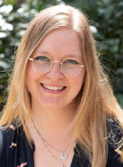
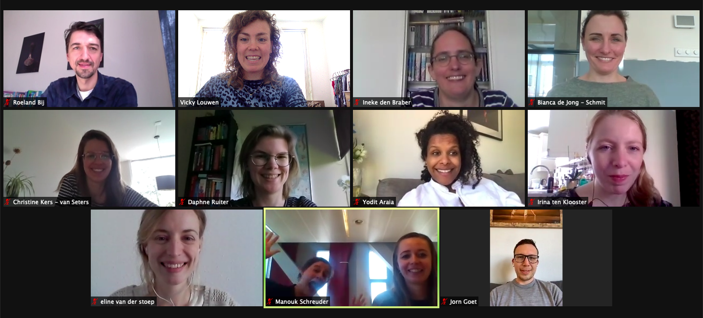
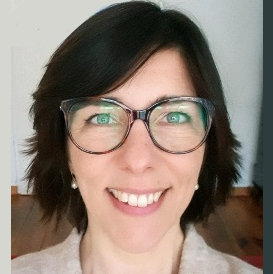
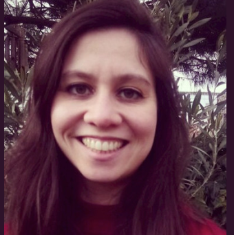

Daphne Ruiter, namens AIOS-groep maart 2019, Leiden
 Mariëtte, sociale collega, empathische dokter, leergierige student, sportieve vrouw, optimistisch mens. Waar Mariette ook binnen kwam, ze bracht altijd een positieve sfeer met zich mee. Als de zon die tussen de wolken door komt op een regenachtige dag. In onze AIOS-groep plaatste ze zich nooit erg op de voorgrond, maar met één opmerking kon ze ineens volledig raak uit de hoek komen en alles in (een ander) perspectief plaatsen. Na wat twijfels over of ze wel op de juiste plek
zat, koos ze ervoor om de opleiding tot specialist ouderengeneeskunde vol overgave voort te zetten. De vastberadenheid en het perfectionisme zijn kenmerken die Mariëtte ook op andere vlakken inzette, waaronder als keepster in het handbalteam. En ondanks al deze (prestatie)drukte kwam er nog een mooie uitdaging bij, namelijk het schrijven van het hoofdstuk “Essentiële Tremor” in het boek “Kleine Kwalen en alledaagse klachten bij ouderen”. Iets wat ze samen met een collega-AIOS met veel enthousiasme en plezier op een hoog niveau heeft afgewerkt. Verder genoot Mariëtte erg van de buitenlucht en samenzijn met haar vriend en familie, waar zij een heel sterke band mee had. Ze was een alleskunner die zich helemaal had gevonden in het vak van de ouderengeneeskunde en daar niet alleen het hoogst haalbare van zichzelf in verwachtte, maar hier ook intens van kon genieten.
Op 11 augustus jl. zijn wij, op veel te jonge leeftijd, een Bikkel verloren. Een Bikkel met de hoofdletter B, die ook in haar ziekteperiode bleef volhouden tot het echt niet anders meer kon. Een zeer getalenteerd AIOS ouderengeneeskunde die het vak zoveel goeds te brengen had. Een fantastische collega op wie je altijd kon rekenen en bovenal een ontzettend lief mens.
Je stoel is te leeg, Mariëtte, en ons ZOOM-scherm te klein. Wat missen wij je enorm… Dankjewel voor de enorme inspiratiebron die je voor ons bent geweest, en altijd zult blijven.
We zullen je niet vergeten
Al draait de wereld door
De wens van Mariëtte was om, in plaats van bloemen, een
donatie te doen aan het KWF om meer onderzoek naar
melanomen mogelijk te maken. Doneren kan nog steeds:
Namens de AIOS-jaarvertegenwoordigers 2020
Yodit Araia; Manija Arian; Roeland Bik; Charlotte Bruijsten; Stephanie van Dijk; Laurens
Dijkgraaf; Jorn Goet; Bianca de Jong- Schmit; Christine Kers-Van Seters; Irina ten Klooster;
Vicky Louwen; Esther Lugten; Janneke Ravensberg; Daphne Ruiter; Manouk Schreuder;
Ralph Setyo; Dilsher Singh; Denise Sluiter; Eline van der Stoep; Cynthia van Vliet;
Susanne Wilhelm

Als JVT hopen we enerzijds een verbinding te kunnen vormen tussen de opleiding en de AIOS sen anderzijds tussen de verschillende opleidingsfases. Helaas duurde de pandemie in 2021 voort en stond de verbinding tussen AIOS onder druk. Er bleek een sterke behoefte om elkaar weer op de opleiding te kunnen ontmoeten. In de zomer van 2021 heeft SOOL dit, passend binnen de landelijke versoepelingen, kortdurend kunnen faciliteren.
Waar 2019 en 2020 in het kader stonden van het ontwikkelen en vlot implementeren van online onderwijs, konden we in 2021 gaan nadenken over een lange termijn strategie op de digitalisering. In de JVT vergaderingen was er ruimte voor evaluatie van de gebruikte platformen. Zo bleek Kaltura te weinig gebruiksvriendelijk te zijn en de roosterapp voor veel verwarring te zorgen bij de AIOS. Mede door deze feedback werd er uiteindelijk gekozen voor Zoom als online medium en werd er een nieuw iemand aangesteld voor het beheren van de app. Waar eerder nog wel eens werd gekozen voor informatievoorziening aan de AIOS per mail, werd afgesproken uitsluitend via Brightspace te gaan communiceren. Samen met leden van JVT werd ter ondersteuning hiervan een ‘FAQ’ document opgesteld.
SOOL heeft de visitatie succesvol afgerond en heeft een toekenning voor onbepaalde tijd. Voorheen was dit altijd vijf jaar, nu dus voor onbepaalde tijd elke 2 jaar zal er een kwaliteit cyclus worden doorlopen. De aandachtspunten van het RGS waren met name op het gebied van communicatie, de JVT heeft samen de opleiding gekeken waar deze aandachtspunten zijn en hoe deze verbeterd kunnen worden.
De JVT speelt ook een rol in communicatie naar de AIOS ten aanzien van de ontwikkelingen binnen de opleiding bijvoorbeeld via de notulen van de vergaderingen. Verder is er een rol weggelegd voor het JVT om ontwikkelingen binnen het management team te communiceren aan de AIOS.
Samen met de huisartsopleiding en de opleiding tot AVG, maar ook in de ziekenhuis module krijgt het Interprofessioneel opleiden steeds meer vorm. Vanuit het JVT wordt gekeken hoe dit in de praktijk gaat en bevalt bij de AIOS.
Tot slot willen we stilstaan bij het verlies van onze mede AIOS: Mariette Koster.
Zij overleed vorig jaar, veel te jong na een progressieve ziekte. Ook vanuit de JVT wensen we haar naasten, haar vrienden en allen die zij met haar aanwezigheid heeft verrijkt sterkte toe.
Ouderengeneeskunde en wetenschap in het AIOTO-traject: the best of both worlds

Janneke Ravensberg
Sinds 3 jaar ben ik AIOTO en combineer ik de opleiding tot SO met promotieonderzoek, een uitdagend en divers traject dat ik met veel plezier doe. Ik ben daar niet alleen in want in Leiden staat de teller inmiddels op 8 AIOTO-SO’s (arts in opleiding tot onderzoeker en specialist ouderengeneeskunde) van wie de eerste onlangs gepromoveerd is en de tweede binnenkort haar proefschrift zal verdedigen! Onze onderzoeken zijn divers en omvatten onderwerpen zoals co-morbiditeit in de geriatrische revalidatie, zorg na een heupfractuur, pijn bij dementie en de geschiktheid van cardiovasculaire medicatie bij ouderen.
Mijn promotietraject richt zich op het optimaliseren van levothyroxinebehandeling bij 60-plussers. Er zijn heel wat aandachtspunten voor deze, meestal levenslange, behandeling bij ouderen: de behoefte aan levothyroxine kan met het vorderen van de leeftijd afnemen; de kans op overbehandeling stijgt met de behandelduur; een deel van de ouderen wordt mogelijk onnodig behandeld op basis van een onjuiste, niet-meer actuele of obsolete indicatie; behandeling van subklinische hypothyreoïdie bij 65- en 80-plussers heeft geen klinische meerwaarde. In de RELEASE studie onderzoeken wij momenteel bij hoeveel patiënten levothyroxinebehandeling afgebouwd of zelfs gestaakt kan worden, met behoud van een normale schildklierfunctie. Het includeren van huisartspraktijken en patiënten is in volle gang, een hele uitdaging tijdens de COVID-pandemie. Het motiveert enorm dat huisartsen ook in deze enerverende tijd willen deelnemen aan onderzoek en aangeven dat zij wetenschap belangrijk vinden.
Vaak wordt mij gevraagd of een traject van 6 jaar niet heel erg lang is, maar mijn ervaring is dat de tijd vliegt als je doet wat je leuk en belangrijk vindt en goed begeleid wordt. Mijn hart ligt zowel bij ouderengeneeskunde als bij wetenschap. Wat mij betreft biedt het AIOTO-traject ‘the best of both worlds’! Zowel in de opleiding als in het promotietraject word je uitgedaagd om jezelf te ontwikkelen in verschillende competenties en kan je creatief aan de slag. Daarnaast lever je met wetenschappelijk onderzoek een belangrijke bijdrage aan het verbeteren van de kwaliteit van de zorg en kan je met medepromovendi een brug slaan tussen wetenschap en onderwijs. Dit alles wordt mogelijk gemaakt door de goede begeleiding door promotor, co-promotor, mentor en opleider. SOOL heeft specifieke aandacht voor het AIOTO-traject. Het contact is laagdrempelig en persoonlijk en dat maakt het mogelijk om het opleidingsschema en promotietraject optimaal op elkaar af te stemmen. Het AIOTO-traject is een aanrader voor iedereen die geïnteresseerd is in wetenschap en blij wordt van een rijke leeromgeving!
Publiceren maar!
Bram Graafland
Ik ben Bram Graafland en ik zit in het derde jaar van mijn opleiding tot specialist ouderengeneeskunde. Het afgelopen jaar ben ik onder andere bezig geweest met het publiceren van mijn Critical Appraisal of a Topic (CAT): ‘Morfine bij acuut coronair syndroom, je beter voelen of langer leven?’ in het tijdschrift voor Ouderengeneeskunde.
Het leuke van het proces van publicatie is dat je wordt uitgedaagd om nog dieper in te gaan op je klinische vraagstuk en met behulp van de feedback van de referenten van het desbetreffende tijdschrift je de onderzochte studies en je artikel nog kritischer gaat benaderen. Voor mij was stap 1 om met mijn wetenschap mentor mijn artikel te bespreken en te bepalen of het geschikt was voor publicatie; Is het een relevant onderwerp, heb ik een duidelijke en goed geformuleerde vraagstelling, komt de empirische cyclus goed naar voren, zijn de resultaten duidelijk beschreven en weergegeven en, vanzelfsprekend, is het artikel goed geschreven en leuk voor collega’s om te lezen? Na het akkoord van mijn mentor was de volgende stap snel gezet, contact zoeken met de redactie en aan de hand van de aanleverspecificaties de eerste versie indienen. Je artikel wordt vervolgens aan de redactie ter goedkeuring en beoordeling voorgelegd, waarna een eerste ronde en evt. een tweede ronde van feedback volgt.
Het een leerzame uitdaging met uiteindelijk een goed resultaat, in de November editie van 2021 is mijn artikel gepubliceerd. Een publicatie is opzichzelfstaand al een mooie beloning, maar daarnaast geeft het je ook een vrijstelling voor een van de volgende CAT’s, toch een mooie bijverdienste. De moraal van dit verhaal, bespreek dus als aios vooral de mogelijkheid van het publiceren van je CAT met je wetenschapsmentor en ga de uitdaging aan!
AIOS zijn in coronatijd

Mary-Joanne Verhoef, eerstejaars AIOS Leiden
Nadat ik me georiënteerd had op de verschillende opleidingen tot specialist ouderengeneeskunde in Nederland, koos ik ervoor om te solliciteren bij de SOOL, vanwege de aandachtspunten ouderengeneeskunde in de eerste lijn en het belang van wetenschappelijk onderzoek. Waar ik niet voor koos, en met mij mijn collega AIOSsen, was het volgen van een opleiding in tijden van een pandemie. De coronapandemie maakte leren en het leveren van zorg een uitdaging op zich.
Wat betreft het leren was het fantastisch dat de introductiedagen ‘gewoon’ in fysieke vorm in Oostvoorne plaats konden vinden. Aan twintig kersverse AIOSsen werd informatie gespuid over hoe de komende jaren de opleiding eruit ging zien, en we maakten kennis met elkaar. Helaas deed corona niet lang daarna alweer een duit in het zakje en moesten de universiteiten weer sluiten, waardoor het onderwijs weer online plaats moest vinden. Naast dat het ongezellig was om je nieuwe collega’s niet in het echt te ontmoeten, was het een uitdaging om aan je ‘ommetjes’ van professor Scherder, of aan je tienduizend stappen, te komen. Online onderwijs volgen is een heuse training voor je aandachtspanne. Gelukkig werd hier regelmatig goed rekening mee gehouden en konden er vaker korte pauzes ingelast worden, of werd het onderwijsprogramma ingekort (en soms waren er noodgedwongen pauzes omdat de techniek niet meezat). Je blijft echter de praatjes bij de koffieautomaat met de andere AIOSsen missen.
Het werken als zorgprofessional in de coronapandemie was pittig, maar ook erg leerzaam. De afdeling waarop ik werk werd in november 2021 geconfronteerd met een coronagolf, waardoor de afdeling in cohortverpleging moest. Na ruim anderhalf jaar van opgedane kennis en het nieuws volgen, was het toch even zoeken naar een nieuwe werkwijze op en met de afdeling. Om voor andere afdelingen in het verpleeghuis beschikbaar te blijven, was ik alleen in de middagen op het cohort te vinden. Hierdoor was het soms flink door werken. Daarbij was een aantal bewoners erg ziek van de vermoede deltavariant, en er overleed ongeveer een vijfde van de afdeling. Wat mij echter het meest bij is gebleven, is dat op de afdeling een verbroedering ontstond. De cohortperiode werd samen doorstaan, en we leunden op elkaar. Wat de cohortperiode blootlegde op de afdeling was hoe belangrijk een vertrouwde samenwerking is in de verpleeghuiszorg; een leerzame les getrokken uit een vreselijke situatie.
Inmiddels is het maart 2022 en lijkt voorlopig het grootste gevaar van de coronapandemie geweken. Het onderwijs vindt weer grotendeels fysiek plaats, en op de afdeling is de meeste inhaalzorg bijna achter de rug. Hét moment om vooruit te kijken, en uit te kijken naar nog meer leerzame ervaringen!